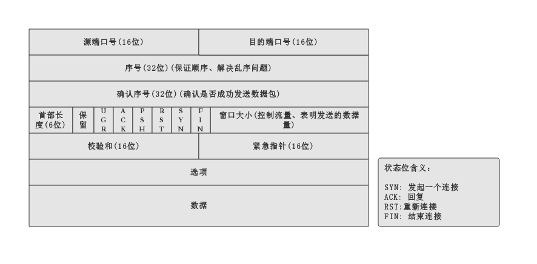

TCP 的三次握手和四次挥手
TCP 协议做的是：在算法层面保证可靠性。
有关可靠性的指标：
- 保证顺序
- 不丢包
- 维护 TCP 连接
- 流量控制
- 拥塞控制
为了能够保证以上指标，设计了对于的 TCP 包头格式,如下：
TCP 包头格式
{kind=link}
TCP 三次握手基本流程
为了更好的理解 TCP 三次握手，来看一下生活中场景(A、B 两人彼此自我介绍的场景):
1、A (A -> B): 你好，我是 A(此时 A 不知道 B 是否收到自己的介绍，所以 A 现在等待 B 的 应答)。
2、B (B -> A): 你好，我是 B(此时 B 不知道 A 是否收到自己的介绍，所以 B 现在等待 A 对自己的应答进行应答，可称为 应答之应答)。
3、A (A -> B): 你好 B (此时 A 已经知道了 B，同时 B 也知道了 A , A 认为双方建立了连接，即使此次数据发送失败，当 A 开始发送数据时，也可完成连接)。
以上情况是在比较顺畅的情况两人建立了友谊关系，当然也会存在异常情况，如下几种：
理解JNI
JNI 概述
JNI(Java Native Interface),意为 Java 本地调用,是连接 Java 和 native 的桥梁。
JNI 推出的原因：
- Java 的平台无关性不能迁移到虚拟机上, Java 虚拟机是使用 native 编写的，虚拟机运行在具体的平台上(Linux、Windows等),由于平台的特性，所以虚拟机无法实现平台无关性。Java 使用 JNI 技术可以作为桥梁，可以实现 Java 调用虚拟机的 native 层，实现了Java 的平台无关性。
- 执行效率和速度。
JNI之 Java 层操作
Java 层主要有两个关键：
- 加载 native 动态库
- 声明 Java 的 native 方法
1 | public class MediaScanner implements AutoCloseable { |
JNI 之 native 层操作 (一)
实例代码：
MediaScanner.cpp 代码片段
1 | // MediaScanner.java 的 native 的 JNI 实现 |
JNI 之 native 层操作 (二) – 注册 JNI 函数
如何知道 Java 层的 MediaScanner 中的 native_init 函数对于 JNI 层的 android_media_MediaScanner_native_init 函数,这时就需要 JNI 注册，将两个层面的函数关联起来。注册后，有了这层关联关系，Java 层调取 JNI 层函数就可以实现。
静态注册
静态注册实现方法参见 Android Studio 配置 javah 生成 C/C++ 头文件，完成 JNI 调用 中相关内容。
当 Java 层调用 native_init 函数式，就会去 JNI 库中寻找 android_media_MediaScanner_native_init 函数，如果没有，就会报错，如果存在该函数，就会建立关联，此关联其实就是保存的 JNI 层函数的函数指针。以后再调用此函数，直接调用该函数指针就可以了，这部分的工作是在 Java 虚拟机中完成的。
Java native 是通过函数指针来与 JNI 层的函数建立联系的。
动态注册
在静态注册中可知，Java 层和 JNI 层的函数是一一对应的，那么可以使用结构体来保存这种关联关系。JNI 中可以使用 JNINativeMethod 这种结构体来实现以上功能。
1 | static const JNINativeMethod gMethods[] = { |
AndroidRuntime.cpp 类中提供了 registerNativeMethod 来完成注册工作：
1 | /* |
jniRegisterNativeMethods 为 JNIHelper 中提供的方法：
1 | extern "C" int jniRegisterNativeMethods(C_JNIEnv* env, const char* className, |
重要的工作只要两步：
1 |
|
注册的函数在什么地方以及什么时候执行？
当 Java 层通过 System.loadLibrary() 加载完 JNI 动态库后，接着会查找库中的 JNI_Onload 的函数，如果有的话，就会调用他，而动态注册的工作就是在此处完成的。
native 函数的参数含义
1 | /** |
JNIEnv 介绍
JNIEnv 是一个 线程相关 的 代表 JNI 环境 的 结构体。
 JNIEnv 内部结构简图
JNIEnv 内部结构简图
JNIEnv 实际上是提供了一系列 JNI 系统函数，通过这些函数可以做到：
- 调用 Java 函数
- 操作 jobject 对象
JNIEnv 的使用
获得 Filed 和 Method
1 | static void |
调用 Field 和 Method
1 | //调用 JNIEnv 的 CallVoidMethod 函数 |
JNIEnv 有一系列类似 CallVoidMethod 的函数，形式如下：
NativeType Call
jstring
jstring 对象可以看成 Java 中 String 对象在 JNI 层的代表。
- JNIEnv 调用 NewString(JNIEnv env,const jchar unicodeChars,jsize len):从 Native 的字符得到 jstring 对象(Unicode)。
- JNIEnv 的 NewStringUTF 将 Native 的一个 UTF 字符串得到一个 jstring 对象(UTF)。
- JNIEnv 提供 GetStringChar 函数，将 Java String对象转换成本地 Unicode 字符串。
- JNIEnv 提供 GetStringUTFChars 函数 ，将 Java String 对象转换为本地 UTF 字符串。
- 调用上面四个函数后需要调用 ReleaseStringChars 或 ReleaseStringUTFChars 函数来释放相应资源。
JNI 中的三种引用
- Local Reference：本地引用。JNI 函数执行完成后，这些 jobject 可能被回收。
- Global Reference：这种方式的引用，不主动释放，永远不会被回收。
- Weak Global Reference： 在使用过程中，可能会被回收。
Java Basic (四) -- 内部类
1. 提问
- 内部类为什么会出现
- 内部类的调用
- 内部类与外部类访问成员变量的不同
- 静态内部类和非静态内部类
为什么使用内部类
- 内部类提供了 更好的封装，可以把内部类的细节隐藏在外部类中，对同一个包中的其他类不可见。
- 内部类可以访问外部类的私有数据。因为内部类为外部类的成员，成员之间可以互相访问,外部类不可以访问内部类的私有数据。
- 可以使用匿名内部类创建访问一次的类，十分方便。
2. 非静态内部类
例子 ：
1 | public class OutClass { |
2.1 内部类可以访问外部类的成员变量(包括私有变量)
原因：
在非静态内部类对象里，保存了外部类对象的引用。
内存模型： 内存模型图
内存模型图
但是当外部类与内部类有相同名字的变量时，引用外部类变量需要指定外部类对象 – Outclass.this
2.2 编译后的 Class 文件
在 JVM 中没有内部类这个概念，所有的类都是普通类（POJO），内部类也会被编译成带有前缀的类。
编译后，得到两个 class 文件:
OutClass.javaOutClass$InnerClass.class
2.3 内部类方法中的变量的访问顺序
内部类方法内部中 –> 内部类中的成员变量 –> 外部类中的成员变量 –> 不存在，编译异常
2.4 内、外部类变量名相同
访问使用如下格式：
this.field : 内部类变量
OutClass.this.field : 外部类变量
2.5 外部类不可直接访问内部类成员
非静态内部类成员只在非静态内部类范围内是可知的，外部类不能直接访问。
通过 内部类实例对象来访问。
1 | new InnerClass().method(); |
2.6 外部类中静态成员中不允许直接使用非静态内部类
静态成员为类成员，在编译期对其初始化，如果直接使用非静态成员(如非静态内部类)，则会发生错误。
2.7 内、外部类关系
非静态内部类对象寄生在外部类对象里，有非静态内部类对象一定存在外部类对象，反之不成立。
2.8 非静态内部类中的静态成员(重点理解)
如果内部了声明静态成员变量，那么必须使用 final 修饰。
因为一个静态变量只有一个实例，而对于每一个外部对象，分别有一个单独的内部类实例，如果这个变量不是 final 的，那么他就不是唯一的，这与 static 的含义相互冲突。
非静态内部类中不能含有静态方法。
1 | public class OutterClass { |
3. 静态内部类
1 | class OutClass { |
3.1 静态内部类不可以访问外部类实例成员，可以访问类成员
静态内部类为外部类的类成员，只能访问外部类的静态变量，不可以访问非静态变量。
3.2 编译后的 Class 文件
与非静态内部类相同，编译后得到两个 class 文件 – OutClass.class 、StaticInnerClass.class
3.3 外部类不可直接访问内部类成员
静态内部类成员、实例成员只在静态内部类范围内是可知的，外部类不能直接访问。
通过 内部类名 来访问静态内部类类成员。
1
StaticInnerClass.staticNum++;
通过内部类实例对象访问静态内部类实例成员。
1
2
3StaticInnerClass staticInnerClass = new StaticInnerClass();
staticInnerClass.method();
staticInnerClass.num++;
4. 内部类使用
4.1 外部类使用内部类
- 基本的使用
- 外部类使用内部类的子类
外部类中的静态代码块、静态方法中不可使用非静态内部类，因为静态成员不能使用非静态成员。
4.2 外部类以外使用非静态内部类
根据内部类的访问权限修饰符，内部类对其他类的可见性不同。
外部类以外建立非静态内部类实例必须外部类实例和 new 来调用非静态内部类的构造器。
- 非静态内部类
1 | OutClass{ |
调用：
1 | OutClass.InnerClass innerclass = new OutClass().new InnerClass(); |
- 非静态内部类子类
4.2 外部类以外使用非静态内部类
1 | OutClass{ |
调用：
1 | OutClass.InnerClass staticInnerClass = new OutClass.InnerClass(); |
5. 局部内部类
1 | public class Test { |
局部内部类，顾名思义内部类定义在 方法内部，其有效范围也在方法内部，方法外部无法访问,即：对外部世界完全的隐藏起来。
通过 javac Test.java 对该类进行编译，生成的 class 有 3 个，分别为： Test.class、Test$1InnerBase.class、Test$1SubInnerClass.class。
局部内部类遵循如下命名格式：
OutClassName$NInnerClassName 其中 N 表示第 N 个内部类。
6. 匿名内部类(Anonymous Inner Class)
6.1 定义
匿名内部类适合创建只需要一次使用的类。
定义内部类的格式：
1 | new 实现接口 或 父类构造器(参数列表) |
由其格式可知，匿名内部类必须且只能继承一个父类，或实现且最多一个接口。
由于构造器必须与类名相同，而匿名内部类不能有类名，所以匿名类不能有构造器。
例子：
1 | public interface IClick { |
在这个例子中，main 方法中的调用 show 的方法中定义了一个匿名内部类，这个匿名内部类实现了 IClick 接口。
不仅在 匿名内部类中，就是在普通的内部类中访问内部类外部的变量也需要添加 final 修饰符。
原因：
对于普通局部变量而言，它的作用域停留在方法内，当方法执行完毕，该局部变量也随之消失。但内部类则可能产生隐式的 “闭包”，闭包使得局部变量脱离它所在的方法继续存在。
个人理解，匿名内部类是一个实现了接口或继承类的
使用限制
- 由于系统在创建匿名内部类时，会创建匿名内部类的对象，所以匿名内部类不能定义为抽象类。
- 由于匿名内部类没有类名，所以匿名内部类无法定义构造器，但可以使用初始化块进行初始化。
方法的返回值的生成和表示这个返回值的类的定义结合在一起。
为什么需要内部类？
答: 如果你想实现一个接口，但是这个接口中的一个方法和你构想的这个类中的一个方法的名称，参数相同，你应该怎么办？这时候，你可以建一个内部类实现这个接口。由于内部类对外部类的所有内容都是可访问的，所以这样做可以完成所有你直接实现这个接口的功能。
真正的原因，java中的内部类和接口加在一起，可以很好的实现多继承的效果
内部类是否有用、必要和安全
内部类是一种编译器现象，与虚拟机无关。编译器会把内部了翻译成用 $ 分割外部类名与内部类名的常规文件，而虚拟机对此一无所知。
Vim 基本使用
1、插入命令
| 命令 | 作用 |
|---|---|
| a | 在光标所在字符后插入 |
| A | 在光标所在行尾插入 |
| i | 在光标所在字符前插入 |
| I | 在光标所在行首插入 |
| o | 在光标下插入行 |
| O | 在光标上插入行 |
2、定位命令
| 命令 | 作用 |
|---|---|
| :set nu | 设置行号 |
| :set nonu | 取消行号 |
| gg | 到第一行 |
| G | 到最后一行 |
| nG | 到第n行 |
| :n | 到第n行 |
| $ | 移至行尾 |
| 0 | 移至行首 |
3、删除命令
| 命令 | 作用 |
|---|---|
| x | 删除光标所在处字符 |
| nx | 删除光标所在处后 n 个字符 |
| dd | 删除光标所在行 |
| ndd | 删除n行 |
| dG | 删除光标所在行到文件末尾的内容 |
| D | 删除光标所在处到行尾的内容 |
| :n1,n2d | 删除指定范围的行 |
4、复制和剪切命令
| 命令 | 作用 |
|---|---|
| yy | 复制当前行 |
| nyy | 复制当前行以下 n 行 |
| dd | 剪切当前行 |
| ndd | 剪切当前行以下 n 行 |
| p | 粘贴在当前光标所在行下 |
| P | 粘贴在当前光标所在行上 |
5、替换和取消命令
| 命令 | 作用 |
|---|---|
| r | 取代光标所在处字符 |
| R | 从光标所在处开始替换字符，按 Esc 结束 |
| u | 取消上一步操作 |
6、搜索和搜索替换命令
| 命令 | 作用 |
|---|---|
/string|搜索指定字符串 、搜索时忽略大小写 :set ic
n|搜索指定字符串的下一个出现位置
：%s/old/new/g|全文替换指定字符串
：n1，n2/old/new/g|在一定范围内替换指定字符串
7、保存和退出命令
| 命令 | 作用 |
|---|---|
:w|保存修改
:w new_filename|另存为指定文件
：wq|保存修改并退出
ZZ|快捷键，保存修改并退出
:q!|不保存修改退出
：wq!|保存修改并退出（文件所有者及root 用户可使用）